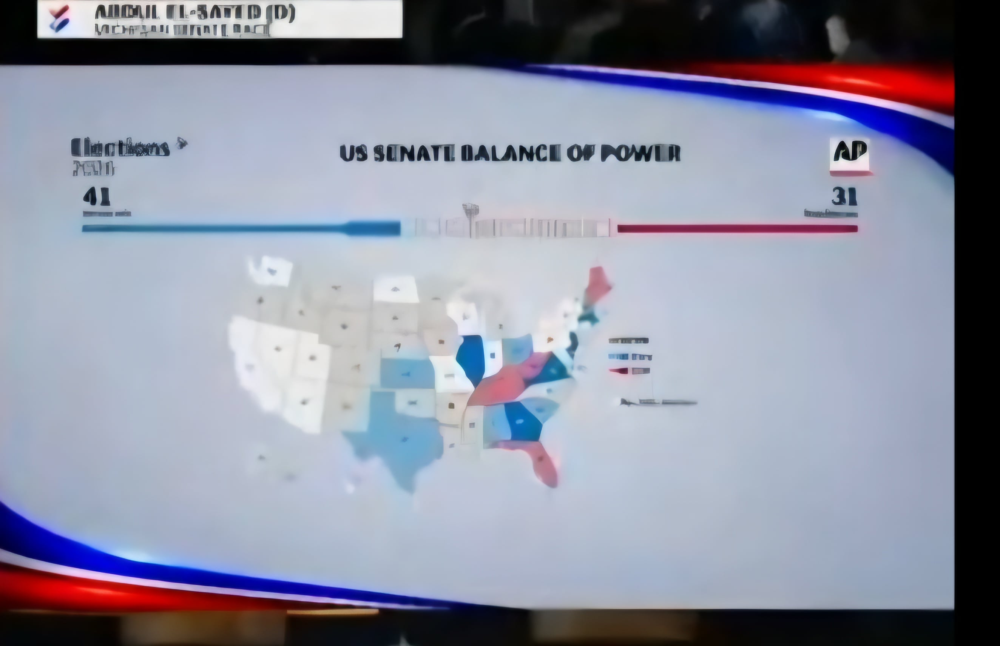

텍사스 파랭이 스타트
현재로선 부정선거가 우세
아직 극초반이고 지금 빨간색인 플로리다도 파랭이 출발이였음
암튼 지금은 주작임

텍사스 파랭이 스타트
현재로선 부정선거가 우세
아직 극초반이고 지금 빨간색인 플로리다도 파랭이 출발이였음
암튼 지금은 주작임
세계평화 씹창낸 노랑머리 고아가요?
파랭이가 민주당아니여?
세계평화는 고사하고 미국평화도 못지켜내는 판국 아녀?? ㅋㅋㅋㅋㅋㅋㅋ
댓글 제대로 안읽고 대댓 다는 놈들이 3명ㅋㅋㅋㅋㅋㅋㅋㅋ
뜻은 정 반대 인데 ㅋㅋㅋ
ㄹㅇ 내가 잘못 이해했나하고 다시 봤네
엠뒈들이 너무 많음
답답한 애들 많다 그치
텍사스가 파랗다) 혹시 주작?
근데 트럼프) 파래질만도하지
개연성 생성기
텍사스가 파래?
텍사스 저번 대선에도 저랬음
대도시에 대기업들 들어서면서 민주당 지지자들 수급 많이 됐고, 도심지가 먼저 개표되는 영향으로 초반에는 민주당 우세로 나옴
후반에 시골할배들꺼 개표하면 공화당으로 바뀔거임
근데 시발 25% 깠는데 민주당 59.5%인거보니 진짜 아모른직다일 수도 있겠다는 생각이 듭니다ㅋㅋㅋㅋ
정정드려 죄송합니다
ㅋㅋ
ㅋㅋㅋㅋㅋㅋㅋㅋㅋㅋㅋㅋㅋㅋㅋㅋ
비슷한추세가 우리나라포함 전세계에 많은듯
38% 깠는데 상원 58% 주지사 54%임 ㅋㅋㅋㅋㅋㅋㅋ 진짜 뭔가뭔가임 이번에
댓글 쓰고나서 다시 체크하니 본인 생각 틀렸을수 있다는 빠른 정정 개웃기네 ㅋㅋㅋㅋㅋㅋㅋㅋㅋ
계엄...해야겠지?
텍사스가 어떻게 파랄수가 있음?
아무리 공화당 텃밭이어도 후보를 병신으로 내면 안 된다는 교훈
유가 때문에 시민들 얼굴이 시퍼래져서 가능 ㅋㅋ
당연히 공화당 당선될 거 생각하고 이번에 후보 병신 냄. 후보라는 새끼가 사생활 및 부패 스캔들, 지명수배자와 두바이에서 호화 파티 ㅋㅋㅋㅋㅋ
??
노머고의 공정선거는 지가 압도적으로 이길때뿐이 없음
이겨도 지 맘에 안드는 차이만 났으면 부정선거임ㅋㅋㅋ
트럼프가 저렇게 잘하고 있는데도?
미국 망했네 망했어..
....?
저건 대놓고 지능형 민주당임
괴연 미국의 운명은?
남부 딕시들 주들이 민주당 경합주가 되네 ㅋㅋㅋㅋ
트럼프님 사랑해요 ♡♡♡♡♡♡♡♡♡
텍사스가 파란색으로 시작이라니 ㅋㅋㅋㅋㅋ
개표 언제쯤 끝남?
텍사스가 파란색되면 진짜 ㅋㅋㅋㅋㅋㅋ
경합이라고 말하는 켄자스 플로리다 메인 싹다 공화당 가는거보면 텍사스도 걍 공화당될거같은데


지금 민주당은 입에서 막 단맛이 나올거같음
일단 다음 대선이 희망적임 (예상 후보들은 아닌거같긴 한데..)
트럼프처럼 해도 일단 나라가 망하진 않음
우리가 겉으로만 세련되고 품위있는척 하면서 비슷하게 해도 될거같음
문제생겨도 트럼프가 역치 엄청 올려놓아서 최악은 면함
ㅋㅋㅋㅋ
민주당도 지금 진짜배기 사회주의자 유입되서 ㅋㅋㅋ
설마 아무리 개똥을 싸도 노란머리만 하겠냐고
저지랄을 해도 뽑아주는 곳이 있다는 게 어디든 똑같구나
텍사스가 파랗다고?? ㅅㅂ ㅋㅋㅋㅋ
텍사스가 파란색은 씹ㅋㅋ
씨발 20세기 초인줄;
저번대선처럼 언론근들갑, 까보니 공화당 승 아님? ㅋㅋㅋㅋㅋ
국회습격준비
잘하는데 저리나오면 의심이라도 되지